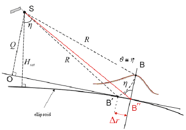
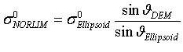
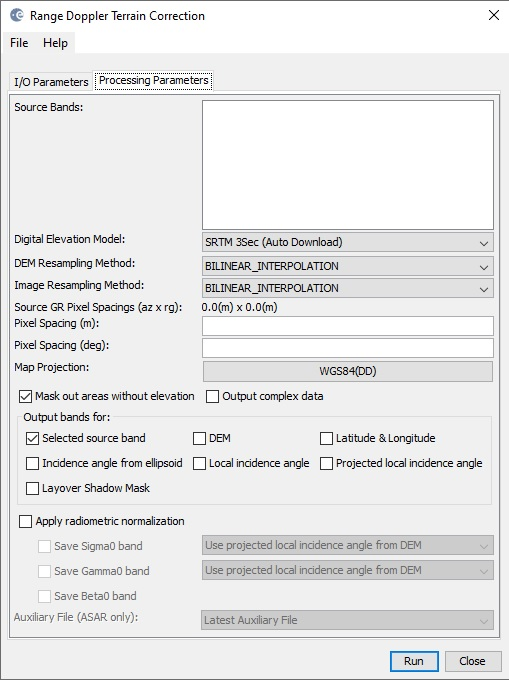

| Orthorectification | |
Due to topographical variations of a scene and the tilt of the satellite sensor, distances can be distorted in the SAR images. Image data not directly at the sensor’s Nadir location will have some distortion. Terrain corrections are intended to compensate for these distortions so that the geometric representation of the image will be as close as possible to the real world.
The geometry of topographical distortions in SAR imagery is shown below. Here we can see that point B with elevation h above the ellipsoid is imaged at position B’ in SAR image, though its real position is B". The offset Δr between B' and B" exhibits the effect of topographic distortions.

Terrain Correction allows geometric overlays of data from different sensors and/or geometries.
The Range Doppler Terrain Correction Operator implements the Range Doppler orthorectification method [1] for geocoding SAR images from single 2D raster radar geometry. It uses available orbit state vector information in the metadata or external precise orbit (see Apply Orbit File for the supported missions), the radar timing annotations, the slant to ground range conversion parameters together with the reference DEM data to derive the precise geolocation information.
For each output map pixel the operator takes the DEM height, converts the position to Earth-fixed coordinates, finds the zero-Doppler time t0 and the slant range R, and applies the azimuth bistatic correction tc = t0 + R/c (half the two-way travel time; c is the speed of light). If the product metadata says the processor already applied this correction, nothing is added, except for Sentinel-1, where SNAP adds the range-dependent residual (R − Rfirst)/c, with Rfirst the slant range to the first pixel. R is then recomputed at tc (plus the optional atmospheric path delay) and tc and R are turned into the source line and sample, which are interpolated with the Image Resampling Method.
Currently, only the DEMs with geographic coordinates (Plat, Plon, Ph) referred to global geodetic ellipsoid reference WGS84 (and height in meters) are properly supported. For an external DEM, heights may be geoid or ellipsoid heights, as set by External DEM Apply EGM (see below).
Various different types of Digital Elevation models can be used (ACE2_5Min, ACE_30, ASTER_1Sec, CFEM, Copernicus30m, Copernicus90m, GETASSE30, SRTM 1Sec, SRTM 3Sec GeoTiff).
DEM tiles are downloaded automatically from the selected source for the area covered by the image to be orthorectified. The default is the Copernicus 30m Global DEM. Downloaded tiles are stored under ~/.snap/auxdata/dem (Windows: %USERPROFILE%\.snap\auxdata\dem).
Please note that the DEMs downloaded by SNAP (ACE, ASTER, Copernicus and SRTM) give heights relative to a geoid, not to the WGS84 ellipsoid. SRTM, ACE and ASTER are referred to the geoid EGM96; the Copernicus DEM (GLO-30/GLO-90) is referred to EGM2008. SNAP converts these heights automatically to heights relative to the WGS84 ellipsoid; this includes ASTER. SNAP currently converts Copernicus heights (and external DEMs with Apply EGM) using EGM96; the difference from EGM2008 is mostly below 1 m but can reach a few metres in mountainous areas.
Note also that the SRTM DEM covers area between -60 and 60 degrees latitude. Therefore, for orthorectification of product of high latitude area, different DEM should be used.
User can also use external DEM file in Geotiff format which, as specified above, must be with geographic coordinates (Plat, Plon, Ph) in WGS84 (and height in meters). If its heights are geoid (orthometric) heights, keep Apply EGM on; if they are already ellipsoid heights, turn Apply EGM off.
The External DEM Apply EGM option controls whether SNAP converts the heights of an external DEM file from geoid to ellipsoid heights. SAR geometry needs ellipsoid heights, so this is required for DEMs such as SRTM or Copernicus. Clear the option only if your file already contains ellipsoid heights. Default in this operator: selected. It has no effect on the DEMs downloaded by SNAP.
Besides the default suggested pixel spacing computed with parameters in the metadata, user can specify output pixel spacing for the orthorectified image.
The pixel spacing can be entered in both meters and degrees. If the pixel spacing in one unit is entered, then the pixel spacing in another unit is computed automatically.
The calculations of the pixel spacing in meters and in degrees are given by the following equations:
pixelSpacingInDegree = pixelSpacingInMeter / EquatorialEarthRadius * 180 / PI;
pixelSpacingInMeter = pixelSpacingInDegree * PolarEarthRadius * PI / 180;
where EquatorialEarthRadius = 6378137.0 m and PolarEarthRadius = 6356752.314245 m as given in WGS84.
Because the two conversions use different radii, the round trip is not exact: 10 m becomes 8.98 × 10−5°, which converts back to about 9.966 m. In geographic output the same degree step is used for latitude and longitude, so an east-west pixel covers only cos(latitude) times the north-south distance.
This option implements a radiometric normalization based on the approach proposed by Kellndorfer et al., TGRS, Sept.
1998 where

In current implementation θDEM is the local incidence angle projected into the range plane and defined as the angle between the incoming radiation vector and the projected surface normal vector into range plane[2]. The range plane is the plane formed by the satellite position, backscattering element position and the earth centre.
Note that among σ0, γ0 and β0 bands output in the target product, only σ0 is real band while γ0 and β0 are virtual bands expressed in terms of σ0 and incidence angle. Therefore, σ0 and incidence angle are automatically saved and output if γ0 or β0 is selected.
For σ0 and γ0 calculation,
by default the projected local incidence angle from DEM [2] (local
incidence angle projected into range plane) option is selected, but the
option of incidence angle from ellipsoid correction (incidence angle
from tie points of the source product) is also available.
For Sentinel-1 the Sigma0 band is the ellipsoid-based σ0 from the product
calibration table, with no local-angle factor. The derived Gamma0 and Beta0 virtual bands therefore mix an
ellipsoid σ0 with a local angle and are not a consistent normalisation. For terrain-flattened
γ0 use Terrain Flattening before Terrain Correction.
The correction factors [3] applied to the original image depend on if the product is complex or detected and the selection of Auxiliary file (ASAR XCA file).
The most recent ASAR XCA available from installation_folder\auxdata\envisat compatible with product date is automatically selected. According to this XCA file, calibration constant, range spreading loss and antenna pattern gain are obtained.
apply projected local incidence angle into the range plane correction
apply calibration constant correction based on the XCA file
apply range spreading loss correction based on the XCA file and DEM geometry
apply antenna pattern gain correction based on the XCA file and DEM geometry
User can select a specific ASAR XCA file available from the installation folder or from another repository. According to this selected XCA file, calibration constant, range spreading loss and antenna pattern gain are computed.
apply projected local incidence angle into the range plane correction
apply calibration constant correction based on the selected XCA file
apply range spreading loss correction based on the selected XCA file and DEM geometry
apply antenna pattern gain correction based on the selected XCA file and DEM geometry
The most recent ASAR XCA available from the installation folder compatible with product date is automatically selected. Basically with this option all the correction factors applied to the original SAR image based on product XCA file used during the focusing, such as antenna pattern gain and range spreading loss, are removed first. Then new factors computed according to the new ASAR XCA file together with calibration constant and local incidence angle correction factors are applied during the radiometric normalisation process.
remove antenna pattern gain correction based on product XCA file
remove range spreading loss correction based on product XCA file
apply projected local incidence angle into the range plane correction
apply calibration constant correction based on new XCA file
apply range spreading loss correction based on new XCA file and DEM geometry
apply new antenna pattern gain correction based on new XCA file and DEM geometry
The product ASAR XCA file employed during the focusing is used. With this option the antenna pattern gain and range spreading loss are kept from the original product and only the calibration constant and local incidence angle correction factors are applied during the radiometric normalisation process.
apply projected local incidence angle into the range plane correction
apply calibration constant correction based on product XCA file
User can select a specific ASAR XCA file available from the installation folder or from another repository. Basically with this option all the correction factors applied to the original SAR image based on product XCA file used during the focusing, such as antenna pattern gain and range spreading loss, are removed first. Then new factors computed according to the new selected ASAR XCA file together with calibration constant and local incidence angle correction factors are applied during the radiometric normalisation process.
remove antenna pattern gain correction based on product XCA file
remove range spreading loss correction based on product XCA file
apply projected local incidence angle into the range plane correction
apply calibration constant correction based on new selected XCA file
apply range spreading loss correction based on new selected XCA file and DEM geometry
apply new antenna pattern gain correction based on new selected XCA file and DEM geometry
Please note that if the product has been previously multilooked then
the radiometric normalization does not correct the antenna pattern and
range spreading loss and only constant and incidence angle corrections
are applied. This is because the original antenna pattern and the range
spreading loss correction cannot be properly removed due to the pixel
averaging by multilooking.
If
user needs to apply a radiometric normalization, multilook and terrain
correction to a product, then user graph
“RemoveAntPat_Multilook_Orthorectify” could be used.
For ERS 1&2 the radiometric normalization cannot be applied directly to original ERS product.
Because of the Analogue to Digital Converter (ADC) power loss correction , a step before is required to properly handle the data. It is necessary to employ the Remove Antenna Pattern Operator which performs the following operations:
For Single look complex (SLC, IMS) products
For Ground range (PRI, IMP) products:
After
having applied the Remove Antenna Pattern Operator to ERS data, the
radiometric normalisation can be performed during the Terrain
Correction.
The applied factors in case of "USE projected angle from the DEM" selection are:
To apply radiometric normalization and terrain correction for ERS, user can also use one of the following user
graphs:
These LUTs allow one to
convert the digital numbers found in the output product to
sigma-nought, beta-nought, or gamma-nought values (depending on which
LUT is used).
The following parameters are used by the operator:

GPT operator: Terrain-Correction. Generated from the operator source; parameter names are those used in GPT and graph XML.
| Parameter | Type | Default | Allowed values | Unit | Description |
|---|---|---|---|---|---|
sourceBands | String[] | The list of source bands. | |||
demName | String | Copernicus 30m Global DEM | The digital elevation model. | ||
externalDEMFile | File | External DEM | |||
externalDEMNoDataValue | double | 0 | External DEM No Data Value | ||
externalDEMApplyEGM | Boolean | true | External DEM Apply EGM | ||
demResamplingMethod | String | BILINEAR_INTERPOLATION | NEAREST_NEIGHBOUR, BILINEAR_INTERPOLATION, CUBIC_CONVOLUTION, BISINC_5_POINT_INTERPOLATION, BISINC_11_POINT_INTERPOLATION, BISINC_21_POINT_INTERPOLATION, BICUBIC_INTERPOLATION, DELAUNAY_INTERPOLATION | DEM Resampling Method | |
imgResamplingMethod | String | BILINEAR_INTERPOLATION | NEAREST_NEIGHBOUR, BILINEAR_INTERPOLATION, CUBIC_CONVOLUTION, BISINC_5_POINT_INTERPOLATION, BISINC_11_POINT_INTERPOLATION, BISINC_21_POINT_INTERPOLATION, BICUBIC_INTERPOLATION | Image Resampling Method | |
pixelSpacingInMeter | double | 0 | The pixel spacing in meters | ||
pixelSpacingInDegree | double | 0 | The pixel spacing in degrees | ||
mapProjection | String | WGS84(DD) | The coordinate reference system in well known text format | ||
alignToStandardGrid | boolean | false | Force the image grid to be aligned with a specific point | ||
standardGridOriginX | double | 0 | x-coordinate of the standard grid's origin point | ||
standardGridOriginY | double | 0 | y-coordinate of the standard grid's origin point | ||
nodataValueAtSea | boolean | true | Mask the sea with no data value (faster) | ||
saveDEM | boolean | false | Save DEM as band | ||
saveLatLon | boolean | false | Save latitude and longitude as band | ||
saveIncidenceAngleFromEllipsoid | boolean | false | Save incidence angle from ellipsoid as band | ||
saveLocalIncidenceAngle | boolean | false | Save local incidence angle as band | ||
saveProjectedLocalIncidenceAngle | boolean | false | Save projected local incidence angle as band | ||
saveSelectedSourceBand | boolean | true | Save selected source band | ||
saveLayoverShadowMask | boolean | false | Save layover shadow mask | ||
outputComplex | boolean | false | Output complex data | ||
applyRadiometricNormalization | boolean | false | Apply radiometric normalization | ||
saveSigmaNought | boolean | false | Save Sigma0 as a band | ||
saveGammaNought | boolean | false | Save Gamma0 as a band | ||
saveBetaNought | boolean | false | Save Beta0 as a band | ||
incidenceAngleForSigma0 | String | Use projected local incidence angle from DEM | Use incidence angle from Ellipsoid, Use local incidence angle from DEM, Use projected local incidence angle from DEM | Incidence angle used when computing sigma0: ellipsoid, local (DEM) or projected local (DEM) | |
incidenceAngleForGamma0 | String | Use projected local incidence angle from DEM | Use incidence angle from Ellipsoid, Use local incidence angle from DEM, Use projected local incidence angle from DEM | Incidence angle used when computing gamma0: ellipsoid, local (DEM) or projected local (DEM) | |
auxFile | String | Latest Auxiliary File | Latest Auxiliary File, Product Auxiliary File, External Auxiliary File | The auxiliary file | |
applyAPDCorrection | boolean | false | Correct for tropospheric path delay (~3 m range improvement) using a standard atmosphere model | ||
externalAuxFile | File | The antenne elevation pattern gain auxiliary data file. |